Paleta de cores
Medida no navegador: fundos ponderados pela área ocupada, textos pela quantidade de caracteres. Destaques reúnem cores saturadas e fundos de botão.
Fundos
#F5EFE4
Fundo · 63.3%
rgb(245, 239, 228)
rgb(245, 239, 228)
#1E1C18
Fundo · 25.5%
rgb(30, 28, 24)
rgb(30, 28, 24)
#E6DCC6
Fundo · 4.9%
rgb(230, 220, 198)
rgb(230, 220, 198)
#12110F
Fundo · 4.1%
rgb(18, 17, 15)
rgb(18, 17, 15)
#FFFFFF
Fundo · 2.3%
rgb(255, 255, 255)
rgb(255, 255, 255)
#25D366
Fundo · 0.0%
rgb(37, 211, 102)
rgb(37, 211, 102)
#CBA045
Fundo · 0.0%
rgb(203, 160, 69)
rgb(203, 160, 69)
Textos
#555555
Texto · 37.4%
rgb(85, 85, 85)
rgb(85, 85, 85)
#141414
Texto · 13.5%
rgb(20, 20, 20)
rgb(20, 20, 20)
#FFFFFF
Texto · 33.4%
rgb(255, 255, 255)
rgb(255, 255, 255)
#7C5A21
Texto · 5.6%
rgb(124, 90, 33)
rgb(124, 90, 33)
#F4E3B0
Texto · 4.3%
rgb(244, 227, 176)
rgb(244, 227, 176)
#8A8783
Texto · 4.2%
rgb(138, 135, 131)
rgb(138, 135, 131)
Destaques
#7C5A21
Destaque
rgb(124, 90, 33)
rgb(124, 90, 33)
#E6DCC6
Destaque
rgb(230, 220, 198)
rgb(230, 220, 198)
#F4E3B0
Destaque
rgb(244, 227, 176)
rgb(244, 227, 176)
Gradientes
url("data:image/svg+xml,%3Csvg xmlns='http://www.w3.org/2000/svg' width='180' height='180'%3E%3Cfilter id='g'%3E%3CfeTurbulence type='fractalinear-gradient(0deg, rgba(20, 20, 20, 0.82), rgba(20, 20, 20, 0.3) 46%, rgba(0, 0, 0, 0))linear-gradient(160deg, rgb(237, 234, 227), rgb(223, 218, 208))linear-gradient(115deg, rgb(156, 116, 42) 0%, rgb(135, 98, 31) 38%, rgb(110, 78, 25) 70%, rgb(87, 62, 19) 100%)linear-gradient(100deg, rgb(244, 227, 176) 0%, rgb(203, 160, 69) 40%, rgb(124, 90, 33) 68%, rgb(203, 160, 69) 100%)Tipografia
Inter · Aa Bb Cc 0123
67% do texto · Se a sua cabeça não desliga, esta página é para você.Jost · Aa Bb Cc 0123
19% do texto · Se a sua cabeça não desliga, esta página é para você.Fraunces · Aa Bb Cc 0123
14% do texto · Se a sua cabeça não desliga, esta página é para você.Escala usada (desktop 1440px)
| Tamanho | Peso | Família | Amostra |
|---|---|---|---|
| 76px | 330 | Fraunces | Texto de exemplo |
| 48px | 330 | Fraunces | Texto de exemplo |
| 42px | 330 | Fraunces | Texto de exemplo |
| 34px | 400 | Fraunces | Texto de exemplo |
| 28px | 400 | Fraunces | Texto de exemplo |
| 23px | 400 | Fraunces | Texto de exemplo |
| 19px | 300 | Inter | Texto de exemplo |
| 16px | 300 | Inter | Texto de exemplo |
| 16px | 500 | Jost | Texto de exemplo |
| 16px | 400 | Inter | Texto de exemplo |
Mobile (390px): 32px/330, 30px/330, 28px/400, 23px/400, 22px/400, 19px/300, 16px/500, 16px/300 · H1 no mobile: 39.375px
Tags
| Tag | Família | Tamanho | Peso | Altura de linha | Espaçamento | Caixa | Cor |
|---|---|---|---|---|---|---|---|
| <h1> | Fraunces | 76.4068px | 330 | 76.4068px | -2.29221px | none | #141414 |
| <h2> | Fraunces | 48px | 330 | 55.68px | -0.576px | none | #141414 |
| <h3> | Fraunces | 28px | 400 | 33.6px | normal | none | #141414 |
| <h4> | Fraunces | 23px | 400 | 27.6px | normal | none | #FFFFFF |
| <p> | Inter | 14px | 400 | 23.8px | normal | none | #555555 |
Botões
Recriados com os estilos computados reais. Efeitos de hover e animação não aparecem aqui; veja a seção de animações.
AGENDAR AVALIAÇÃO
fundo #00000000 · texto #2E2205 · raio 1px · padding 17.28px 34.4px · 12px/500 uppercase · 3x na páginaAgendar avaliação
fundo #00000000 · texto #FFFFFFAD · raio 0px · padding 6.72px 0px · 14px/400 none · 3x na páginaTratamentos
fundo #00000000 · texto #282828 · raio 3px · padding 9.6px 13.6px · 14px/400 none · 2x na páginaÁrea do Aluno
fundo #00000000 · texto #282828 · raio 3px · padding 9.92px 16.8px · 13px/500 none · 1x na páginaCURSOS PARA DENTISTAS
fundo #00000000 · texto #141414 · raio 1px · padding 17.28px 34.4px · 12px/500 uppercase · 1x na páginaCards e containers
Card (6x)
MAIS PROCURADO ORTODONTIA Ortodontia e Alinhadores Alinhamento discreto e funcional, do pl
raio 12px · sombra rgba(255, 253, 247, 0.92) -10px -10px 26px 0px, rgba(124, 90, 33, 0.12 · borda 0px none rgb(20, 20, 20) · 356x345pxBordas, raios e sombras
12px
8px
1px
3px
20px
6px
Sombras
rgba(124, 90, 33, 0.16) 3px 3px 6px 0px inset, rgba(255, 253, 247, 0.95) -3px -3px 6px 0px insetrgba(255, 253, 247, 0.92) -10px -10px 26px 0px, rgba(124, 90, 33, 0.12) 12px 12px 30px 0px, rgba(255, 253, 247, 0.5) -18px -18px 38px 0px inset, rgba(124, 90, 33, 0.04) 16px 16px 34px 0px insetrgba(255, 253, 247, 0.92) -8px -8px 20px 0px, rgba(124, 90, 33, 0.12) 10px 10px 24px 0px, rgba(255, 253, 247, 0.45) -14px -14px 30px 0px inset, rgba(124, 90, 33, 0.035) 12px 12px 26px 0px insetrgba(244, 227, 176, 0.07) -8px -8px 20px 0px, rgba(0, 0, 0, 0.55) 10px 10px 24px 0px, rgba(244, 227, 176, 0.024) -14px -14px 30px 0px inset, rgba(0, 0, 0, 0.2) 12px 12px 26px 0px insetEspaçamentos
- Largura do conteúdo mais comum: -px
- Padding vertical das seções (topo/base): 128px/128px (8x), 184px/128px (2x), 82px/0px (1x)
- Gaps mais usados (flex/grid): 11.2px, 25.6px, 2.4px, 6.4px, 28.8px, 16px
- Altura total da página: 15995px em 12 seções
Estrutura e ritmo de cores das seções
Cada faixa é uma seção de topo, com altura proporcional e a cor ou imagem de fundo real.
1. hero Onde a odontologia encontra a arte da harmonização 928px · padding 82px/0px
2. servicos Sou paciente · ver tratamentos 145px · padding 0px/0px
3. sobre Odontologia conduzida por quem entende de excelência. 1303px · padding 128px/128px
4. 986px · padding 128px/128px
5. 688px · padding 128px/128px
6. 773px · padding 128px/128px
7. 1853px · padding 184px/128px
8. 980px · padding 128px/128px
9. 773px · padding 128px/128px
10. 1709px · padding 184px/128px
11. 1922px · padding 128px/128px
12. 927px · padding 128px/128px
Animações, ícones e bibliotecas
- Keyframes próprios: ea-cintila, ea-correr, ea-respira, ea-tracar, imt-curtain, imt-deriva, imt-entra, imt-faixa-paralaxe, imt-mark-in, imt-shine, imt-trilho
- Animações de entrada do Elementor: nenhuma
- Classes de scroll reveal da casa: nenhuma
- Ícones: 21 SVG, 0 ícones de fonte
- Bibliotecas e tags detectadas: ga4
Snippets da biblioteca presentes nesta página
- Nenhum snippet da biblioteca identificado.
Imagens do site
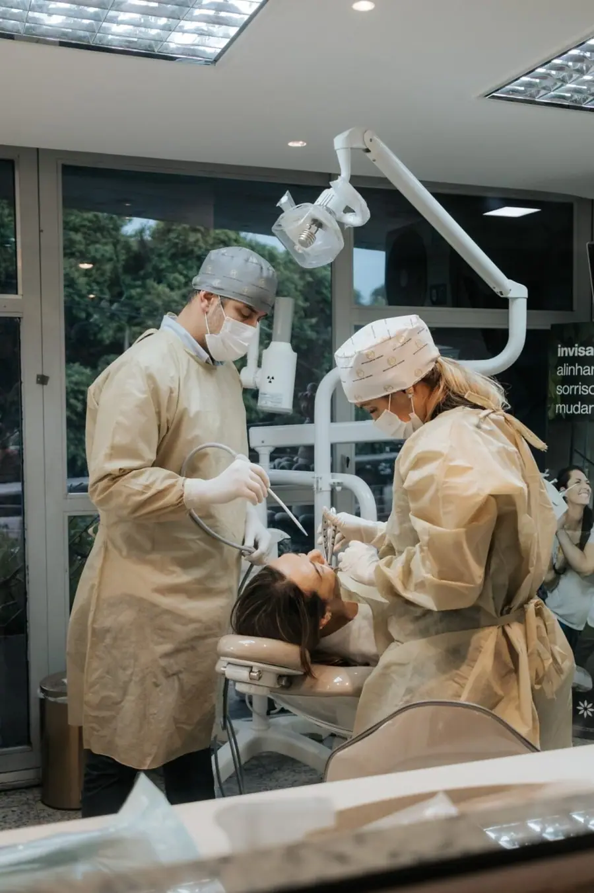
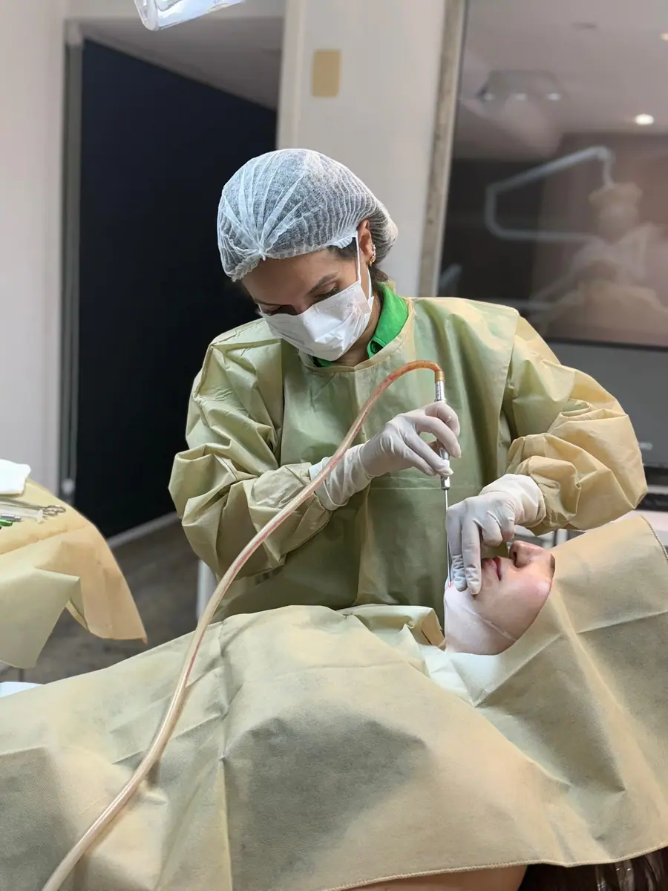
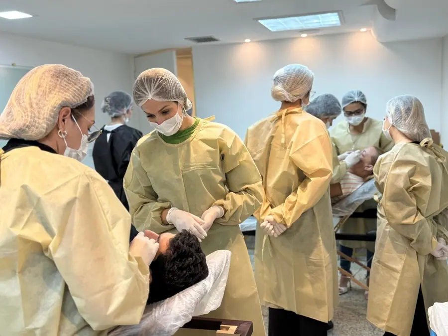
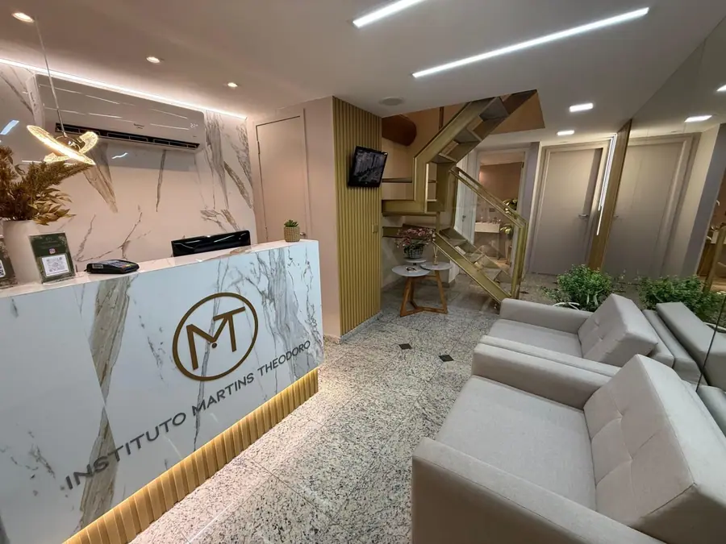
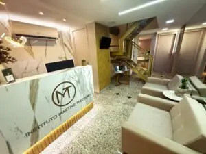
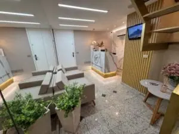
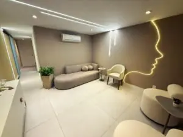
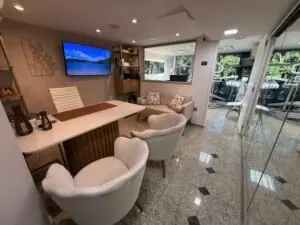
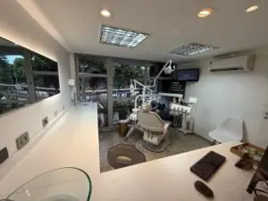
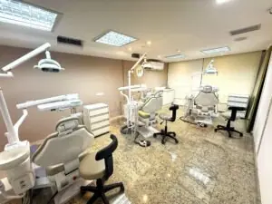
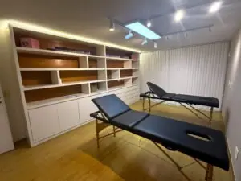
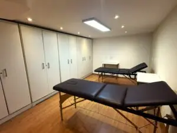
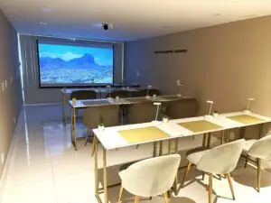
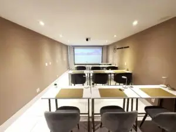